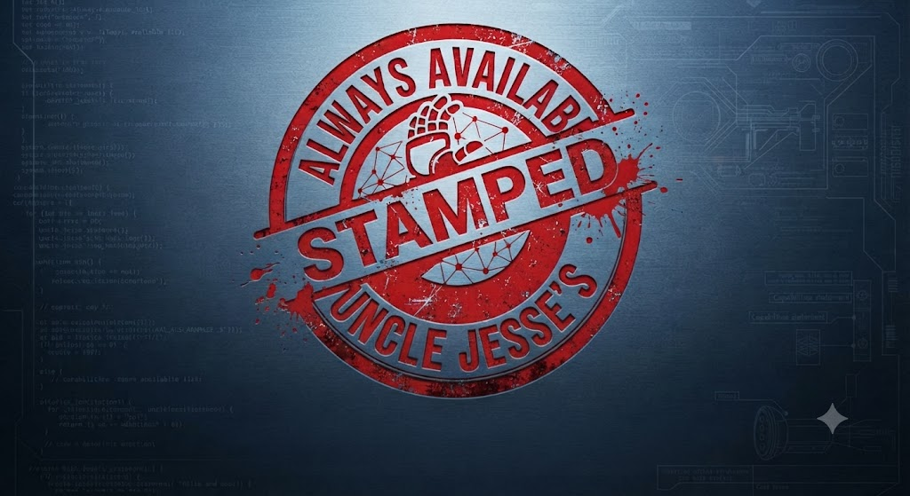

Nodes Calibrated
0
 Uncle Jesse's Always Available LLC
Mobile Electromechanical Engineering Unit
Uncle Jesse's Always Available LLC
Mobile Electromechanical Engineering Unit
Future With Robots
Planning a robotic home, workspace, or service environment? Open the Future With Robots portal to submit sensor technology, surface constraints, and infrastructure preferences.
Escalator Architecture
UNCLE JESSE'S ALWAYS AVAILABLE LLC builds the future of your property. We do not just supply the hardware; we engineer the environment.
STATUS: MOBILE ELECTROMECHANICAL ENGINEERING
Engineering robotic navigation systems requires more than code; it requires physical environmental calibration.

Need service rates, tax-ready documentation, or a technical consultation path? View Service Modules and then submit your deployment intake.
0
0
0
Blue-track deployment for directional guidance, lane separation, and robot routing.
Gold-track tuning for sensor alignment, localization checks, and map lock validation.
Red-track field response for routing failures, drift correction, and rapid re-indexing.
[LOG-421] Tape lane width: 50mm [LOG-422] Camera offset correction: +1.7 deg [LOG-423] ORB feature density target: 950 keypoints per zone [LOG-424] Recalibration cycle time: 00:17:40
Rebuilt a seized belt-drive utility system, corrected shaft alignment, and restored full-load operation with reduced vibration.
Deployed neon-grid routing, tuned ORB/ORD landmarks, and stabilized autonomous corridor navigation at 99 percent path confidence.
Deployment Gallery